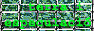

|
|
Sant
Andreu de Palomar segle XXI
|
stap.21
|
| Plataforma Veïnal contra l'Especulació (PVCE) | ||
|
La Plataforma Veïnal contra l'Especulació (PVCE) neix amb l'objectiu de contrarestar els nefastos efectes de la concepció de ciutat mantinguda per l'Ajuntament de Barcelona, i de les polítiques urbanístiques i l'organització de l'espai urbà conseqüents. La PVCE defensa un model alternatiu de ciutat que no es basi exclusivament en conceptes utilitaristes, economicistes i especulatius. La PVCE exigeix, en primer lloc, que la política urbanística es basi en principis de justícia, equitat, respecte a la llei i benestar social. |
El seu objectiu és impulsar el desenvolupament d'una ciutat equilibrada, sostenible i humana on les institucions públiques es comprometin a garantir una veritable participació ciutadana en els processos de transformació urbana en lloc dels models caciquils actuals. La PVCE es crea com instrument per canalitzar la indefensió i la indignació de molts ciutadans i ciutadanes, els drets i interessos dels quals no es troben representats ens els canals establerts fins ara per l'Ajuntament de Barcelona. Les persones que la constitueixen demanen intervenir com a part en tots i cadascun dels conflictes oberts que els afectin. |
|
|
As.
Def. Turó Parc
|
As.
Cat. con custica
|
Afectats
22@
|
Can
Masdeu
|
|
Com.
Afec. Tres Turons
|
Concili
de Trento
|
Coordinadora
22@
|
Font
de la Guatlla
|
|
Forat
de la Vergonya
|
La
Ribera
|
Plat.
Veinal 9 barris
|
As.
Afec. Requalificació Pl. Cerdà
|
|
Salvem
C. Carabassa
|
Sos
Monuments
|
Trinitat
Vella
|
Veïns
Afec. Pl. Marina
|
| . |
|
Els
inicis
 |
| Comunicat de creació de la Plataforma Veïnal contra l'Especulació | ||
| Comunicat
de la Plataforma Veïnal contra l'Especulació Ja fa temps que la ciutat de Barcelona viu una febre especulativa sense precedents. Davant l'augment desmesurat del preu del sòl, l'avarícia privada i la connivència municipal, els veïns i veïnes som els principals perjudicats per una política que només segueix una lògica: fer diners. I per tal de fer-ne cada cop més i més ràpid, els nostres drets son trepitjats contínuament per aquells que diuen representar-nos. |
Davant
d'aquesta situació, diversos col.lectius amb problemes comuns hem decidit
constituir-nos en PLATAFORMA VEÏNAL CONTRA L'ESPECULACIÓ i actuar de forma
conjunta per a fer-nos sentir i poder dir el que pensem sobre el futur
que ens volen imposar sense comptar amb nosaltres. La primera convocatòria de mobilització l'hem fixada per dijous 27 de juny, i volem que sigui una cita mensual coincidint amb els plens municipals. |
|
ELS VEÏNS I LES VEÏNES NO ESTEM EN VENDA. PROU ESPECULACIÓ!
|
Antiglobalització Ciutat Vella -Món Obert
657264480 |
Grups
participants i contactes
(a 03/06/02): |
Associació
Catalana
contra la Contaminació Acústica (La Ribera) |
|
|
Carrer
Carabassa Forat de la Vergonya
933150526 |
Coordinadora
contra 22@
(Poble Nou) 629353225 |
La
Ribera Peri Madriguera
(Trinitat Vella) 93 346 10 88 |
Associació
de Veïns del Casc Antic
93 319 75 65 |
|
Piscines
Folch i Torres
|
Veïns
en defensa Barcelona Vella
932681399 |
Can
Masdeu
670529438 |
Concilio
Trento
93 307 20 52 |
|
Associació
afectats 22@
(Poble Nou) 616276355 |
Portal
del Coneixement
(Les Corts) |
Plaça
Cerdà
|
Plaça
Marina Plataforma
|
|
|
|
Sant Andreu de Palomar segle XXI
en procés de constitució, per a dinamitzar Sant Andreu de Palomar
i denunciar els greuges, les potinades i les agressions que pateix
|
|
 |
 |
|
|
|
 |
|
|
|
|
Tornar |